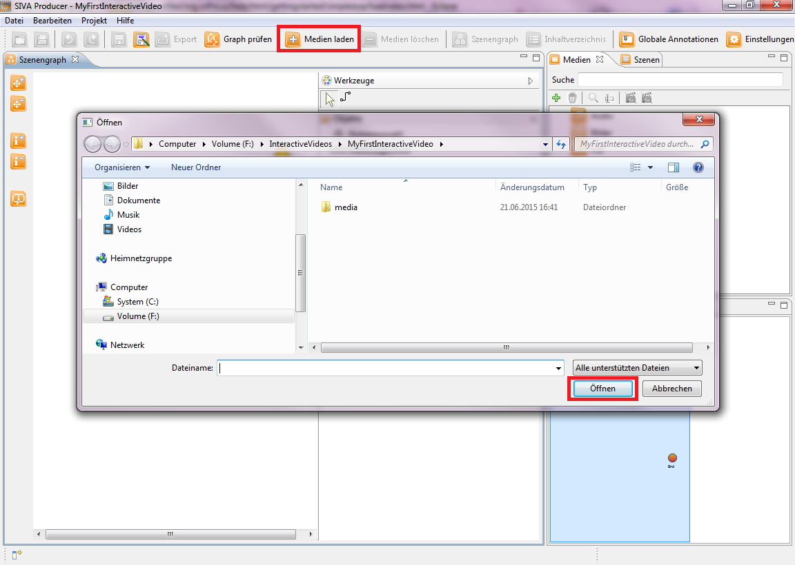

Adding media files
After having created the project you can load media that from then on will appear in the media repository.
Click onto the "Load Media"-button in the taskbar ("+"-button). The open-window is opened where you can choose a file
you want to load.

You can choose from the following types of media:
- video
- audio
- picture
- pdf
- text
Please load two video files and one picture file for this tutorial.
Now your media repository should look like in the picture below.

Next you have to convert the videos into scenes or you cut them to integrate them into the scene graph, so that they can be used
in your interactive video.
You can do this in two different ways by right clicking on the video and after that choose one of the following options:
- You want that the entire video is a scene in your interactive video: create scene over the full length of the video.
- You want that only a part of the video is a scene in your interactive video: edit scene.
If you prefer the first option, the entire video will appear as a scene in you scene repository.
If you choose the second option, how to cut a video is explained in the next menu item.
Important for this tutorial is that you add three scenes to the scene repository.
For editing the scenes please click onto the next menu item "Cutting videos" in the help index on the left side or on
the following link:
Cutting videos
Notice: A video has to be converted into a scene, so you can integrate it into the interactive video.
Notice: At least one video has to be loaded to create an interactive video!